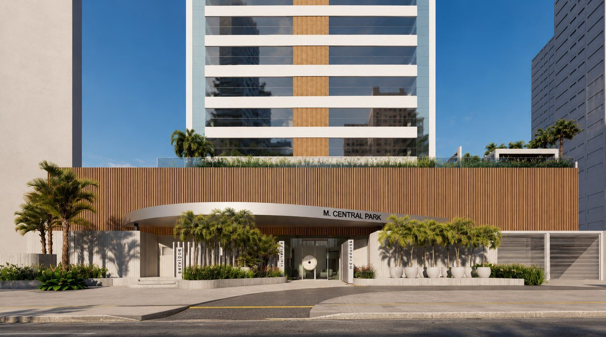
01
MCentral Park
Reforma total das áreas de lazer e adequação de fachada do condomínio vertical MCentral Park, em Goiânia.
Estudo completo →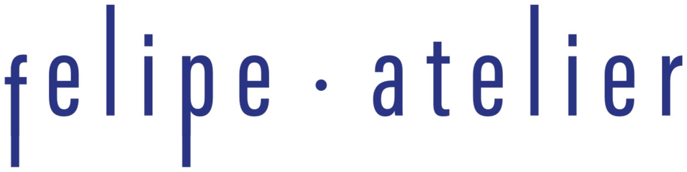
Arquitetura como um exercício de síntese — transformar ideias e sensações em espaços.
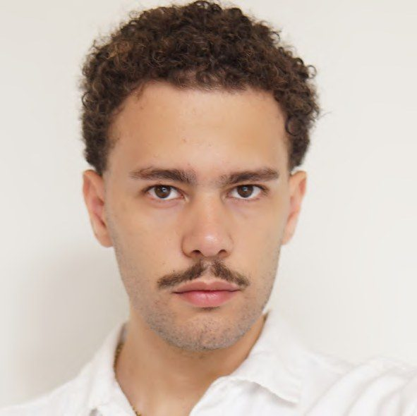
Felipe entende a arquitetura como um exercício de síntese: transformar ideias e sensações em espaços. Chega à arquitetura a partir da prática e produção artística, onde o figurativo e o sensorial já eram centrais. Na arquitetura, esse olhar se amplia, passando a investigar materialidade, escala, luz e vazio.
Sua produção explora a relação entre elegância formal, riqueza sensorial e arte, entendendo a arquitetura como um suporte — um cavalete — para a arte da vida que irá preencher os vazios propositais deixados pelo arquiteto. Nesse percurso, encontra referências que dialogam com sua própria busca: espaços que unem precisão e delicadeza, rigor e elegância.
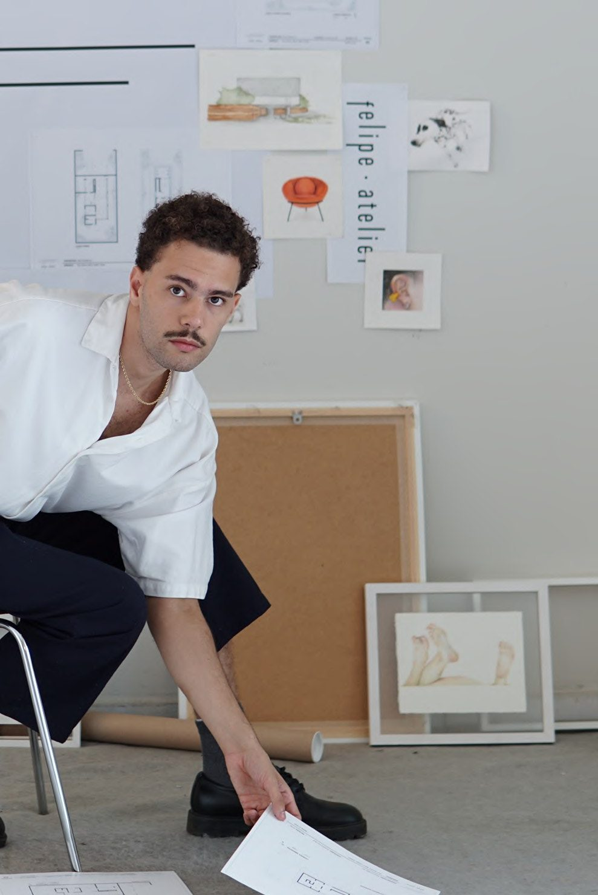
Atuação na concepção, desenvolvimento e liderança de projetos residenciais, corporativos, comerciais, interiores e retrofit habitacional de alto padrão — desde os estudos preliminares e definição conceitual até a compatibilização técnica, coordenação de equipes e diálogo com a execução.
Desempenha papel estratégico no direcionamento criativo dos projetos, conduzindo conceitos, narrativas, apresentações e tomadas de decisão de design, traduzindo valores, identidade e expectativas dos clientes em soluções arquitetônicas singulares.
Experiência na coordenação e revisão de projetos legais, executivos e complementares — elétrica, hidráulica, HVAC e luminotécnica — com domínio de compatibilização BIM por meio da integração de modelos IFC de diversas disciplinas. Atua em modelagem BIM no Revit, visualização e renderização em Lumion, pós-produção em Photoshop e experimentações com inteligência artificial.
Complementa sua atuação com curadoria de mobiliário, design e arte contemporânea, utilizando repertórios da arte, literatura, filosofia, moda, música, antropologia e cultura visual para desenvolver projetos com identidade, significado e excelência estética.
De retrofits habitacionais de alto padrão a residências unifamiliares e paisagismo — projetos desenvolvidos no Escritório Marcos Lula Arquiteto e em produção autoral. Cada projeto tem um estudo completo, do croqui ao executivo.

Reforma total das áreas de lazer e adequação de fachada do condomínio vertical MCentral Park, em Goiânia.
Estudo completo →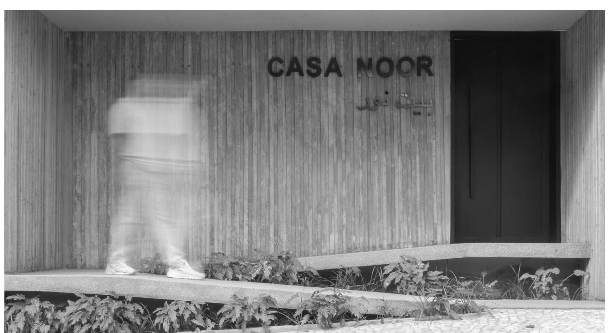
Residência unifamiliar de 500 m² no interior de Goiás — dos croquis em aquarela à obra construída.
Estudo completo →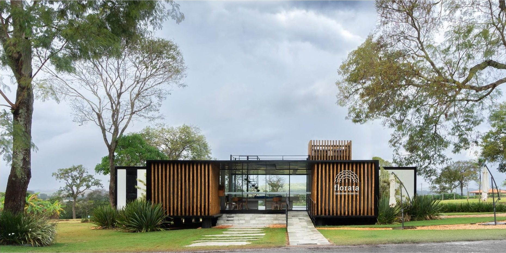
Estande de vendas em módulos industrializados com brise em eucalipto tratado, no entorno de Goiânia.
Estudo completo →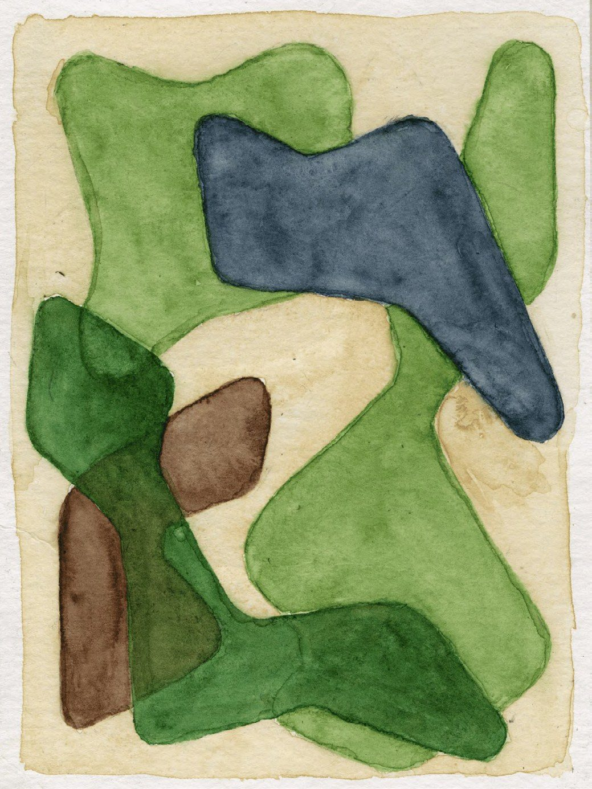
Reforma residencial e paisagismo — intervenções pontuais sobre uma pré-existência inacabada.
Estudo completo →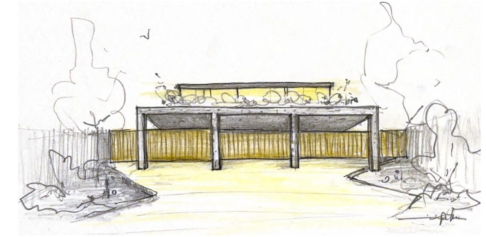
Ensaio anual autoral — a casa ideal como exercício de autoconhecimento e projeto.
Estudo completo →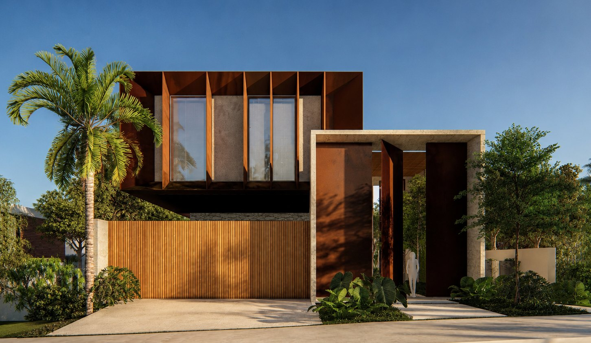
Residência unifamiliar de 550 m² em terreno com declive — formas retas e o apuramento máximo de seus encontros.
Estudo completo →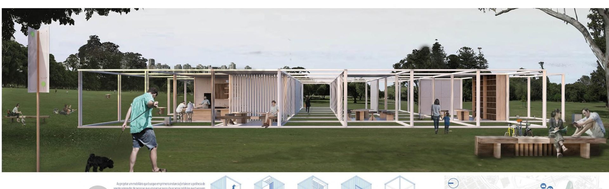
Concurso Nacional de Estudantes Projetar.org · 033 — 2019
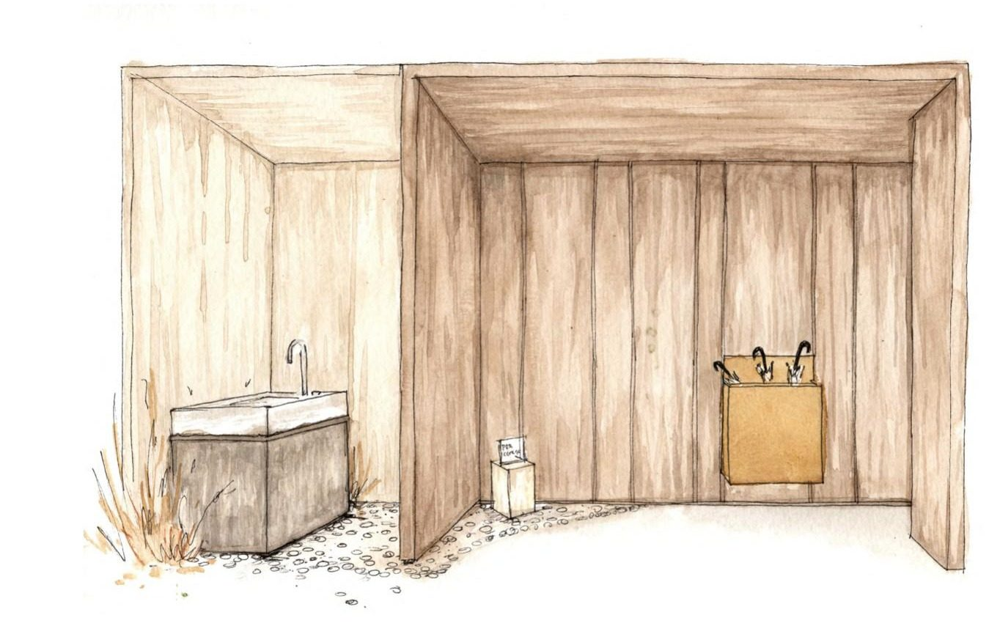
Unidades fixas, sustentáveis, de fácil montagem, em aço patinável modular e reutilizável.
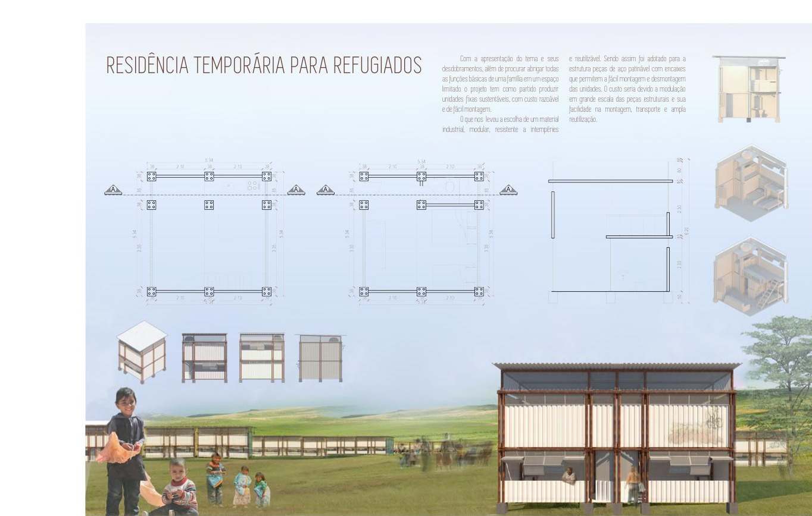
Concurso 002 — Habitação para Refugiados · Sistemas Estruturais na Arquitetura IV
Desenho é, para mim, a melhor forma de conversar com minhas ideias e sentimentos. O papel é o suporte para os desafios técnicos que a arquitetura traz, mas também um exercício de materializar sentimentos para, então, conseguir elaborá-los.
Freud diz que as palavras são o meio essencial para a transferência do inconsciente para o consciente. Mas eu acredito que, quando faltam palavras, é possível começar por imagens.
Com 7 anos de experiência atuando profissionalmente como aquarelista de arquitetura, mantenho também produção própria de arte focada nos sentidos, corpo e emoções há mais de 8 anos. Premiado em concursos e expondo em feiras de arte como Fargo 23, Fargo 21 e Festival Vórtice.
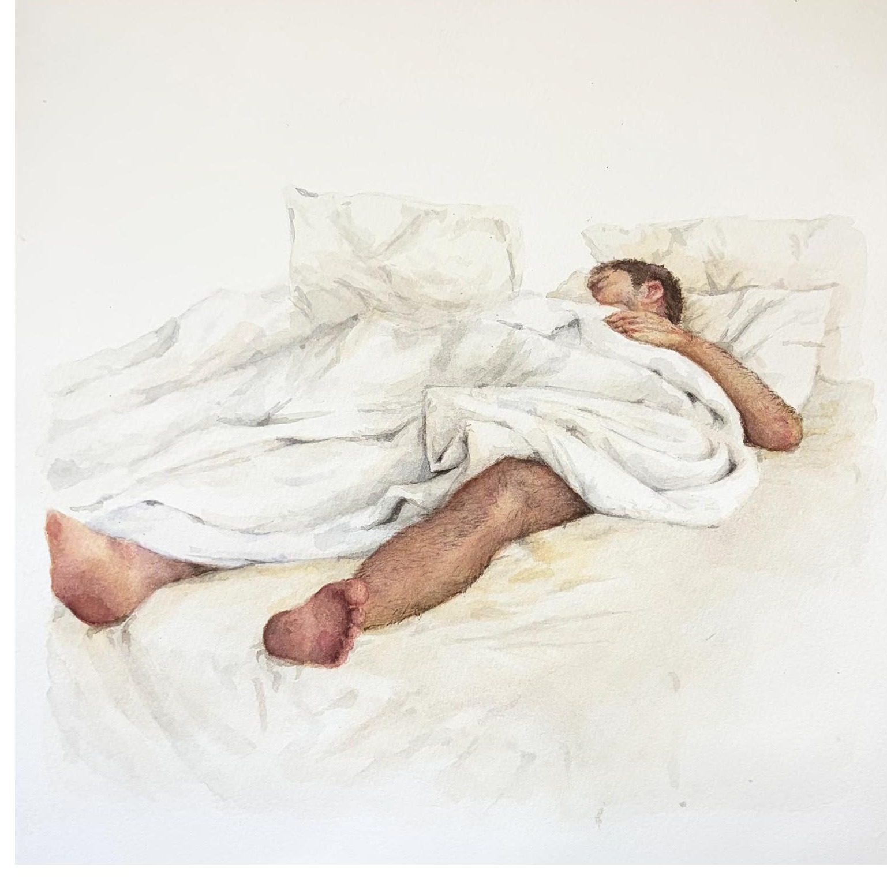
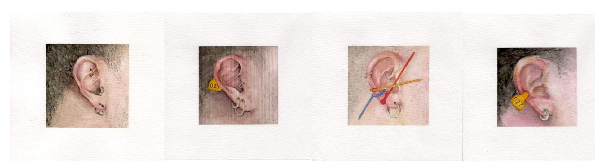